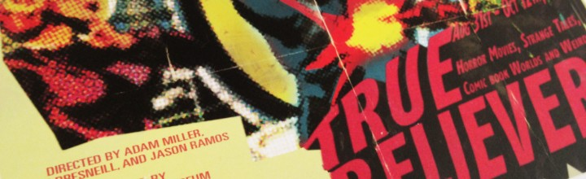

Video Interview on PBS ¡COLORES!
I was recently profiled on KNME New Mexico PBS. The interview is the first ~10 min of this recording. Many thanks to Producer Tara Walch and interviewer Hakim Bellamy.
Money Art on YAHOO! News
Yahoo! (cheesy, I know.) It was cool to wake up and see my artwork on the front page of the website that literally introduced my to the world wide web.
Money Collage on Flavorwire
I was really happy to get some traction on Flavorwire for my most recent body of money collage: Here there be Monsters.
Collecting is Curiosity/Inquiry: New Mexico Museum of Art

One of my Worshiping Mammon currency mosaics is on display at the New Mexico Museum of Art in Santa Fe Sept 20, 2013 – Apr 13, 2014.
True Believers at the TAM
If you are in Torrance (or anywhere for that matter) before October 12th, get down there and see Hero in person.
Inflatable Art on Beautiful Decay
So humbled to blow up in Beautiful Decay with Paul McCarthy’s giant pile of shit.
Why (Local) Art Matters – Interview IQ Magazine
I love the art scene in Albuquerque almost as much as I love our signature blue meth. But seriosuly, IQ Magazine just put together a nice spread of micro-pinions from a number of very smart, talented local contributors to the afforementioned scene. If you want to hear what we had to say, give it […]
Interview in LODOWN MAGAZINE
Some guys who put out a killer blog/magazine called LODOWN wrote up an Interview with me in Jan/Feb 2013 Issue #84.
Go East at Joshua Liner Gallery preview
Kraken, US Currency on canvas, 16″ x 16″ 2012 This is the first of a small series I am exploring. It will be shown alongside other new currency collage work at Joshua Liner Gallery in NYC next month. Please visit the gallery’s website to learn more and get details about the opening.
TTF Video Excerpt

A sample from TTF, a dual channel video (28 minutes, looping) that I made in 2011. This clip is an excerpt and montage of the two screens.